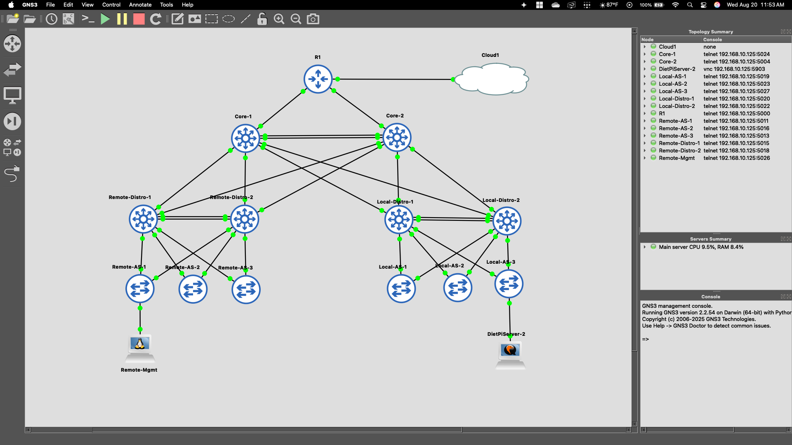

Featured
Dual Site 3-Tier Network Lab
A comprehensive GNS3 simulation of a resilient, dual-site enterprise network using a three-tier architecture. Implements OSPF, HSRP, NAT, and advanced Layer 2 security.
Goal To design and build a complete enterprise network from the ground up in GNS3. It serves as a practical showcase of my mastery of core routing, switching, and security principles, integrating key technologies like OSPF, HSRP, and advanced Layer 2 security to create a resilient and scalable infrastructure.
View project↗